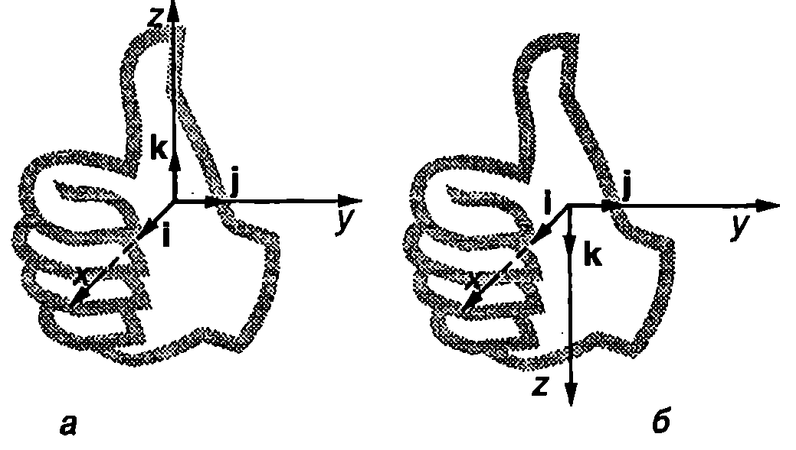
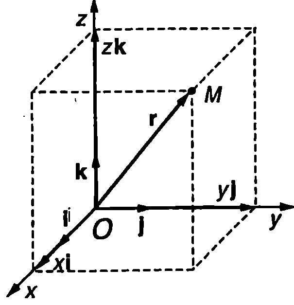
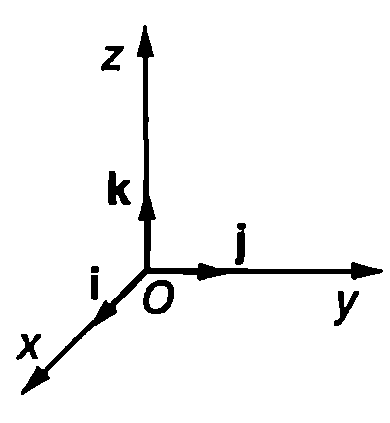
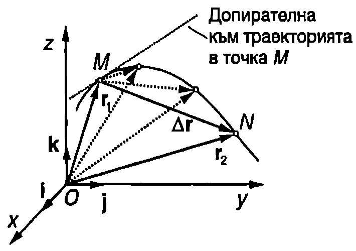
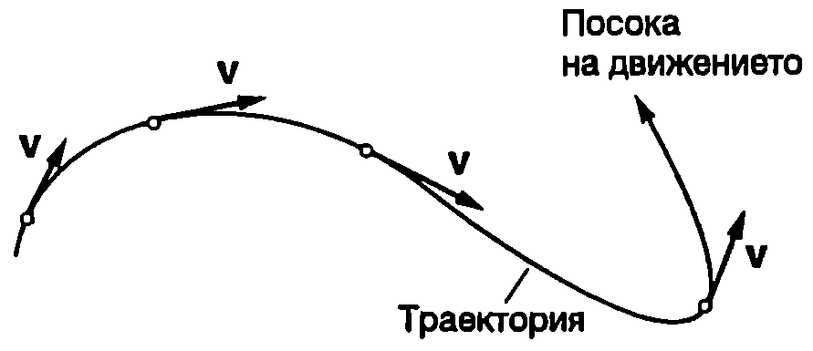
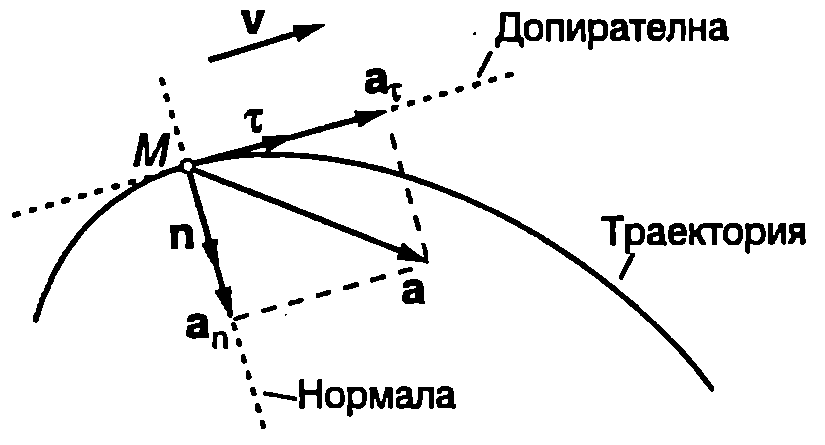
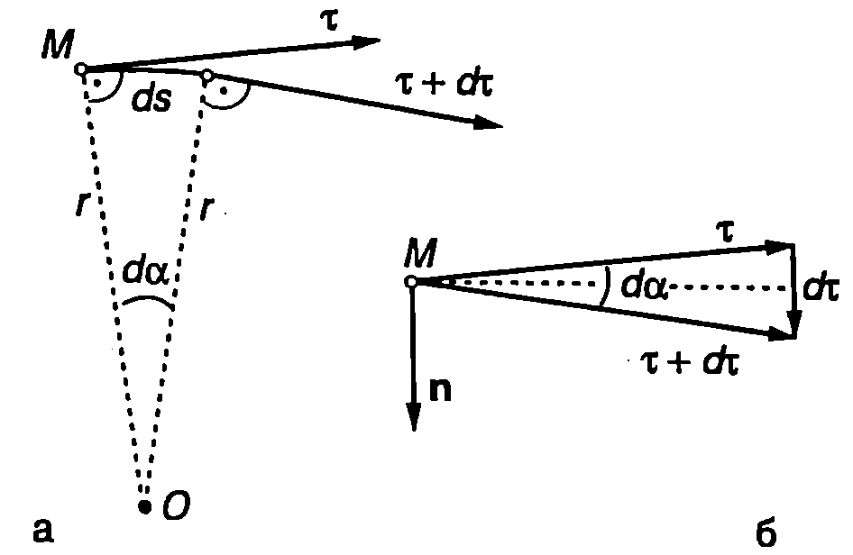
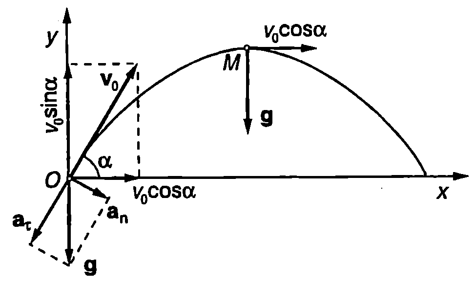

Отправна система
Движението на телата винаги се разглежда спрямо определено тяло, което се приема за неподвижно. Например разглежда се въртенето на Земята около Слънцето, движението на самолета спрямо земната повърхност, на пътника спрямо самолета и т.н.
Тялото, спрямо което се определя положението и движението на другите тела, се нарича отправно тяло.
Отправно тяло заедно с неподвижно свързани към него координатна система и часовник, чрез които се определя положението на другите тела спрямо отправното тяло в различните моменти от времето, образуват отправна система. В класическата механика се приема, че свойствата на пространството се описват от Евклидовата геометрия, а времето тече по един и същи начин във всички отправни системи (абсолютно време).
Ще използваме правоъгълна декартова координатна система, чийто три взаимно перпендикулярни оси , и и се пресичат в началото О на координатната система. На Фиг. \ref{fig:2.1} са показани единичните вектори (с модул единица) , и , насочени в положителните посоки съответно на координатните оси , и .
В зависимост от взаимната ориентация на единичните вектори, координатната система може да бъде дясна или лява. От кой вид е дадена координатна система може да се определи по правилото на дясната ръка (Фиг. \ref{fig:2.2}): Поставя се дясната ръка така, че свитите пръсти да сочат от вектора към вектора по посока на по-малкия ъгъл между тях. Ако опънатият палец сочи по посока на единичния вектор , координатната система е дясна (Фиг. \ref{fig:2.2}а). В обратния случай тя е лява (Фиг. \ref{fig:2.2}б). Във физиката е прието да се използват десни координатни системи.
\begin{figure}[h!] \centering  \caption{Правоъгълни координатни системи: а) дясна; б) лява.} \label{fig:2.2} \end{figure}
Радиус-вектор
Положението на произволна точка в пространството се задава с нейния радиус-вектор . Той се представя геометрично с насочена отсечка, прекарана от началото на координатната система до разглежданата точка (Фиг. \ref{fig:2.3}). Радиус-векторът може да се представи като сума от три вектора, които са успоредни на координатните оси
където векторите , и се наричат компоненти на радиус-вектора . Декартовите координати , и на точка също се наричат компоненти (скаларни компоненти) на радиус-вектора . Скаларните компоненти могат да имат както положителни, така и отрицателни стойности.
\begin{figure}[h!] \centering  \caption{Радиус-вектор на точката М и неговите компоненти.} \label{fig:2.3} \end{figure}
\begin{figure}[h!] \centering  \caption{Правоъгълна декартова координатна система.} \label{fig:2.1} \end{figure}
Модулът (големината) на радиус-вектора е
Траектория
Когато дадена материална точка се движи, нейният радиус-вектор се изменя, т.е. е функция на времето
На векторното уравнение \eqref{eq:2.3} съответстват три скаларни уравнения за координатите , и на материалната точка
x = x(t);\ y = y(t);\ z = z(t)\Уравнения \eqref{eq:2.4} и еквивалентното на тях векторно уравнение \eqref{eq:2.3} се наричат кинематични уравнения на движението на материалната точка. Линията, която материалната точка описва спрямо определена отправна система, се нарича траектория на материалната точка. В зависимост от вида на траекторията движенията се разделят на праволинейни движения и криволинейни движения. Ако са известни кинематичните уравнения на движението, от тях може да се изключи времето и да се определи уравнението на траекторията.
Пример 2.1
Кинематичното уравнение на движението на материална точка е , където и са положителни константи. Определете уравнението на траекторията. \end{psexample}
Решение
На даденото в условието на задачата векторно уравнение за радиус-вектора на материалната точка съответстват следните три скаларни уравнения за нейните координати (компоненти на радиус-вектора):
откъдето правим извода, че движението се извършва в равнината . В уравнението за координатата изключваме времето, като заместим . Получаваме
Това е уравнение на парабола материалната точка се движи в равнината по парабола.
Път и преместване
Разстоянието , измерено по траекторията, което материалната точка изминава за определен интервал от време , се нарича път. Пътят е скаларна величина, която се измерва в метри (m) и може да има само положителни стойности.
На Фиг. \ref{fig:2.4} е показана част от траекторията на материална точка, която извършва криволинейно движение. В момент тя се намира в точка с радиус-вектор а в момент в точка с радиус-вектор . За време материалната точка е изминала път , равен на дължината на дъгата . Величината
се нарича преместване на материалната точка за интервала от време . Преместването е векторна величина, която се представя геометрично с насочена отсечка с начало в началната точка и край в крайната точка . От фигурата се вижда,
\begin{figure}[h!] \centering  \caption{Преместване.} \label{fig:2.4} \end{figure}
че големината на преместването (дължината на отсечката ) е по-малка от изминатия път (дължината на дъгата ). Ако постепенно намаляваме интервала от време , точка се доближава към точка и разликата между големината на преместването изминатия път намалява. В граничния случай, когато точките и са безкрайно близо една до друга, дължините на хордата и на дъгата са равни. Преместването , което материалната точка извършва за безкрайно малък интервал от време , се нарича елементарно преместване. Големината на елементарното преместване e равна на изминатия за същото време път
19
Векторът на елементарното преместване е насочен по допирателната към траекторията в посока на движението.
Скорост
Първата производна на радиус-вектора на материална точка по времето се нарича скорост на материалната точка
Скоростта е векторна величина, която има същата посока, както елементарното преместване - насочена е по допирателната към траекторията по посока на движението (Фиг. \ref{fig:2.5}).
\begin{figure}[h!] \centering  \caption{Скоростта на материалната точка винаги е насочена по допирателната към траекторията по посока на движението.} \label{fig:2.5} \end{figure}
Големината на скоростта е
където е отчетено, че големината на елементарното преместване е равна на елементарния път . Следователно големината на скоростта е равна на първата производна на пътя по времето .
Заместваме радиус-вектора от уравнение \eqref{eq:2.1} в уравнение \eqref{eq:2.7} и получаваме
където , и ca съответно , и компонентата на вектора на скоростта. Ще обърнем внимание, че скаларните компоненти на скоростта, т.е. проекциите на вектора на скоростта върху координатните оси на правоъгълната координатна система, са алгебрични величини те могат да имат както положителни, така и отрицателни стойности. Например, когато векторната компонента на скоростта е насочена в положителната посока на оста , т.е. по посока на единичния вектор , тогава скаларната компонента има положителна стойност (). Ако , това означава, че векторната компонента е насочена в отрицателната посока на оста , т.е. посоката на е противоположна на посоката на .
Големината на скоростта се изразява с формулата
Ускорение
Векторът , равен на първата производна на скоростта по времето , се нарича ускорение на материалната точка
Тъй като, от друга страна, скоростта е първа производна на радиус-вектора по времето, ускорението може да се представи като втора производна на по
или
където , и ca съответно , и компонентите на ускорението. Ако са известни трите компоненти , , и на ускорението, неговата големина а се определя по формулата
Тангенциално и нормално ускорение
По-нататък ще се ограничим с разглеждането само на такива криволинейни движения, които се извършват в една равнина. На Фиг. \ref{fig:2.6} е показана част от траекторията на материална точка, която се движи само в една равнина (равнината на чертежа). В момент тя се намира в точка от траекторията. Нека и са два взаимно перпендикулярни единични вектора, успоредни съответно на допирателната и на нормалата към траекторията, прекарани през точка . Векторът е насочен по посока на движението, т.е. по посока на скоростта , а векторът е насочен към вдлъбнатата страна на траекторията. Векторът на ускорението също лежи в равнината, в която се извършва движението и може да се разложи на две компоненти, насочени съответно в направление на допирателната (тангентата) и на нормалата към траекторията
Компонентата , която е успоредна на допирателната към траекторията, се нарича тангенциално ускорение на материалната точка. Другата компонента , която е насочена по нормалата към траекторията, се нарича нормално ускорение на материалната точка.
\begin{figure}[h!] \centering  \caption{Тангенциално и нормално ускорение.} \label{fig:2.6} \end{figure}
За да определим компонентите и , на ускорението, ще отчетем, че скоростта е насочена по посока на единичния вектор , т.е. , където е големината (модулът) на скоростта. По определение
където е използвано известното от математиката правило за диференциране на произведение. Ще обърнем внимание, че по време на движението единичният вектор непрекъснато променя посоката си - допирателните към различните точки от криволинейна траектория имат различни направления. Затова производната е различна от нула. За да я определим, ще използваме чертежа от Фиг. \ref{fig:2.7}. За време от материалната точка изминава
\begin{figure}[h!] \centering  \caption{} \label{fig:2.7} \end{figure}
път . Тъй като участъкът от траекторията има много малка дължина, той може да се разглежда като дъга от окръжност, чийто център ще означим с . Радиусът на тази окръжност се нарича радиус на кривината на траекторията в точка (Фиг. \ref{fig:2.7}а). Да означим с изменението на единичния вектор за време . Ъгълът между векторите и от е равен на централния ъгъл ( е в радиани), съответстващ на дъгата (като ъгли с взаимно перпендикулярни рамене). От векторния триъгълник на Фиг. \ref{fig:2.7}б определяме модула на вектора
където е отчетено, че и (ъгълът е много малък). От Фиг. \ref{fig:2.7}б се вижда, че векторът е успореден на нормалата и към траекторията, прекарана през точка : . Следователно
където съгласно с уравнение \eqref{eq:2.8} .
Заместваме от уравнение \eqref{eq:2.17} в \eqref{eq:2.15} и получаваме
Тангенциалното ускорение
се определя от първата производна на големината на скоростта по времето , т.е. то характеризира бързината, с която се изменя големината на скоростта. Когато скоростта нараства (), тангенциалното ускорение е насочено по посока на единичния вектор , т.е. по посока на скоростта. Ако скоростта намалява (), векторите , и имат противоположни посоки тангенциалното ускорение е насочено обратно на вектора на скоростта.
Нормалното ускорение
винаги е насочено по посока на единичния вектор , т.е. по нормалата към вдлъбнатата страна на траекторията. Нормалното ускорение не променя големината, а само посоката на скоростта показва бързината, с която се променя посоката на скоростта. То зависи от големината на скоростта и от радиуса на кривината на траекторията в дадената точка.
Движения, при които тангенциалното ускорение е нула (), се наричат равномерни движения. При равномерно движение не се променя големината на скоростта (). Движенията с постоянно по големина тангенциално ускорение се наричат равнопроменливи движения. При равноускорителното движение тангенциалното ускорение е насочено по посока на скоростта и нейната големина нараства. При равнозакъснителното движение и имат противоположни посоки, поради което големината на скоростта намалява.
От уравнение \eqref{eq:2.20} се вижда, че всички криволинейни движения, включително и равномерните, са ускорителни. Те се извършват с различно от нула нормално ускорение, което променя посоката на скоростта. Единственото движение без нормално ускорение е праволинейното движение. Формално можем да смятаме, че праволинейната траектория има безкрайно голям радиус на кривината (). Тогава съгласно с уравнение \eqref{eq:2.20} за праволинейното движение .
И така, единствено праволинейното равномерно движение се извършва без ускорение ().
Пример 2.2
Материална точка се движи по криволинейна траектория в една равнина с тангенциално ускорение и нормално ускорение , където и са положителни константи. В началния момент точката е в покой. Изразете радиуса на кривината на траекторията на материалната точка като функция на изминатия път . \end{psexample}
Решение
Нормалното ускорение е правопропорционално на квадрата на скоростта и обратнопропорционално на радиуса на кривината на траекторията: или . По траекторията точката се движи равноускорително без начална скорост. При такова движение скоростта и пътят са свързани със съотношението (вж. Пример~\ref{ex:1.4} на стр.14). Заместваме във формулата за радиуса на кривината и получаваме.
Пример 2.3
Тяло е хвърлено от земната повърхност с начална скорост , сключваща ъгъл с хоризонта. Земното ускорение в . Съпротивлението на въздуха не се отчита.
а) Получете уравнението на траекторията на тялото.
- Определете нормалното и тангенциалното ускорение в началния момент и във върха на траекторията.
в) При какъв ъгъл радиусът на кривината във върха на траекторията е 8 пъти по-малък, отколкото в точката на хвърляне? \end{psexample}
Решение
а) Движението на тялото в отправна система, свързана със земята, се извършва в една равнина. Избираме правоъгълна координатна система с ос , насочена хоризонтално, и ос , насочена вертикално нагоре. Началото на координатната система съвпада с положението на тялото (което разглеждаме като материална точка) в началния момент . Проекциите на началната скорост върху координатните оси са (Фиг. \ref{fig:2.8})
Кинематичните уравнения на движението са
Ще обърнем внимание, че движението на хвърлено под ъгъл спрямо хоризонта тяло може да се разглежда като сложно движение, съставено от две прости праволинейни движения: равномерно праволинейно движение в направление на хоризонталната ос и равнопроменливо движение с ускорение (земно ускорение) във вертикално направление. От кинематичното уравнение за координатата изразяваме времето ви го заместваме в уравнението за . След прости алгебрични преобразования намираме уравнението на траекторията \begin{figure}[h!] \centering  \caption{} \label{fig:2.8} \end{figure}
което е уравнение на парабола (Фиг. \ref{fig:2.8}).
б) Пълното ускорение на тялото е равно на земното ускорение , т.е. по време на движението ускорението остава постоянно по големина и посока. В началната точка разлагаме ускорението на две компоненти нормално ускорение , и тангенциално ускорение . От Фиг. \ref{fig:2.8} се вижда, че
Във върха на траекторията и (Фиг. \ref{fig:2.8}).
в) Радиусът на кривината на траекторията и нормалното ускорение са свързани със съотношението . Следователно: . За точка :
За върха на траекторията:
По условие , откъдето след заместване определяме: или .
Задачи
-
Кинематичното уравнение на движението на материална точка е , където m/s, m/s. Определете големината на скоростта на материалната точка.
-
Кинематичното уравнение на движението на материална точка е , където m/s, m, . Определете големината на преместването на точката за интервала от време от s до s.
-
Кинематичното уравнение на движението на материална точка е , където m/s, . Определете големините на скоростта и на ускорението на материалната точка в момент s.
-
Кинематичното уравнение на движението на материална точка е , където , m/s, . Определете големината на ускорението на точката в момента, когато скоростта й е насочена перпендикулярно на оста .
-
Кинематичното уравнение на движението на частица е , където m/s, . Определете радиуса на кривината на траекторията в точката, в която скоростта на частицата сключва ъгъл с оста .
-
Частица се движи в една равнина по криволинейна траектория, при което скоростта й намалява. В даден момент тангенциалното ускорение на частицата е равно по големина на нормалното и ускорение. Колко градуса е Ъгълът между векторите на скоростта и на ускорението на частицата в този момент?
-
Тяло е хвърлено под ъгъл спрямо хоризонта с начална скорост от точка с радиус-вектор . Изразете радиус-вектора на тялото като функция на времето . Земното ускорение е . Съпротивлението на въздуха се пренебрегва.
-
Тяло в хвърлено от земната повърхност под ъгъл спрямо хоризонта с начална скорост m/s. На каква височина скоростта на тялото е насочена под ъгъл спрямо хоризонта? Съпротивлението на въздуха се пренебрегва. Земното ускорение е .
-
Тяло е хвърлено успоредно на хоризонта с начална скорост m/s от точка с координати и m. Изразете радиуса на кривината на траекторията на тялото като функция на хоризонталната координата . Колко метра е в точката, в която тялото достига земната повърхност? Началото на правоъгълната координатна система се намира върху земната повърхност. Приемете земното ускорение .
-
Тяло е хвърлено от земната повърхност под ъгъл спрямо хоризонта и достига максимална височина в точка от траекторията си. Определете ъгъла , ако радиусът на кривината на траекторията в точка e .
-
Тяло се движи в равнината с постоянно ускорение . Уравнението на траекторията в , където и са положителни константи. Определете големината на скоростта на тялото в точка с координати .
23